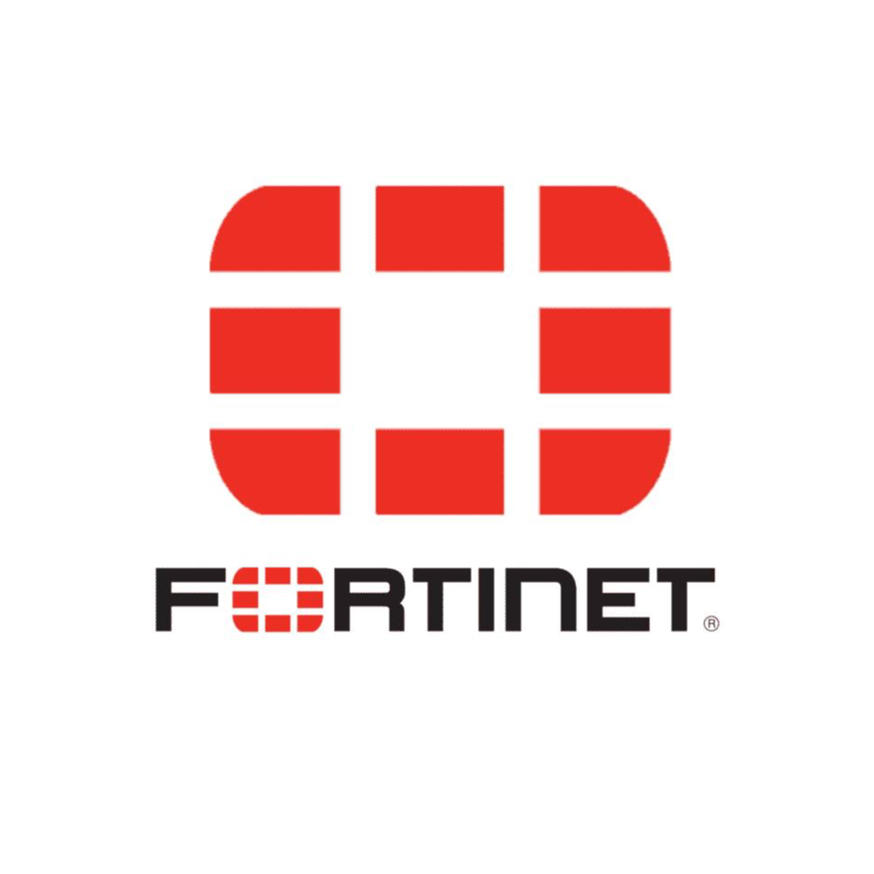
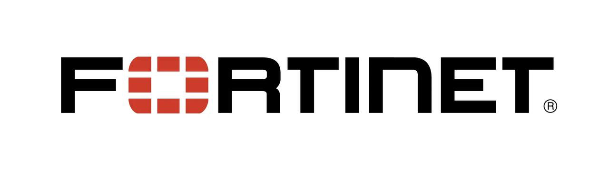
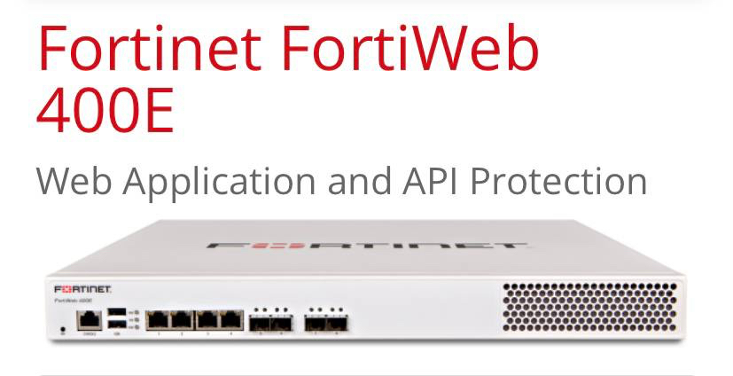
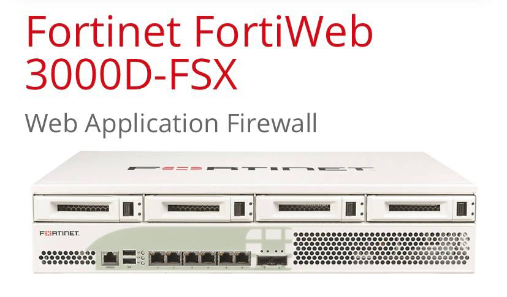
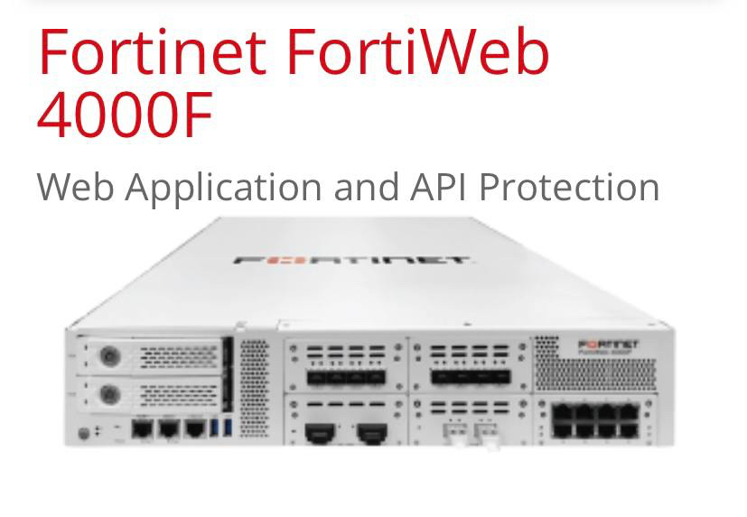

fortinet
فورتی نت اسم یک شرکت سایبری در حوزه امنیت شبکه است. Fortinet در سال 2000 تاسیس شد. این شرکت اولین فایروال FortiGate خود را در سال 2002 راه اندازی کرد و IPO خود را در سال 2009 به پایان رساند. این شرکت تجهیزات امنیتی شبکه را برای شرکت های مخابراتی ، مراکز داده ، شرکت ها و دفاتر توزیع شده ارائه می دهد.
|
FORTINET
FortiWeb از web applications و API ها در برابر تهدیدات OWASP Top-10، حملات DDOS و حملات malicious bot دفاع می کند. ویژگی های پیشرفته مجهز به ML امنیت را بهبود می بخشد و هزینه های اداری را کاهش می دهد. قابلیتها شامل تشخیص ناهنجاری، کشف و حفاظت API، bot mitigation، و تجزیه و تحلیل تهدیدات پیشرفته برای شناسایی حیاتیترین تهدیدها در همه برنامههای محافظتشده است
Web Application Security
بدون مسدود کردن کاربران قانونی و بدون هزینه های مدیریتی بیش از حد که یادگیری برنامه های کاربردی سنتی نیاز دارد، تهدیدات شناخته شده و zero-day را برای برنامه ها مسدود کنید. FortiWeb با استفاده از machine learning برای مدلسازی هر برنامه، ناهنجاریهای مخرب را شناسایی میکند تا تهدیدات را بدون ایجاد موارد false positives که سربار administrative را به همراه دارد، مسدود کند
Bot Defense
فعالیت مخرب bot را بدون مسدود کردن botهایی که از نیازهای قانونی کسبوکار پشتیبانی میکنند، مانند موتورهای جستجو، یا ابزارهای نظارت بر سلامت و عملکرد، متوقف کنید. کاهش اتکا به تکنیکهای قدیمی که تجربه کاربر را کاهش میدهند، و از تکنیکهای پیشرفته مانند فریب bot، تشخیص بیومتریک و machine learning برای شناسایی و مدیریت دقیق ترافیک bot استفاده کنید. FortiWeb Bot Mitigation دید و کنترل مورد نیاز شما را بدون کاهش سرعت کاربران با captchas یا چالش های غیر ضروری فراهم می کند
کشف و حفاظت API
از APIهایی که ارتباطات بین کسب و کار را فعال می کنند و از برنامه های تلفن همراه پشتیبانی می کنند محافظت کنید. FortiWeb API Discovery and Protection از الگوریتم های machine learning برای کشف خودکار API ها با ارزیابی مداوم ترافیک برنامه استفاده می کند. FortiWeb همچنین میتواند out-of-the-box policies را با یک مدل امنیتی مثبت که به طور خودکار بر اساس مشخصات طرح سازمان شما (OpenAPI، XML، JSON) ایجاد میشود، ادغام کند تا در برابر سوء استفادههای API محافظت کند. از API های خود محافظت کنید و امنیت API را به طور یکپارچه در CI/CD pipeline خود ادغام کنید
ویژگی ها و مزایا
برنامه های کاربردی وب و API ها به ابزارهای منتخب برای ساخت برنامه های کاربردی حیاتی تجاری تبدیل شده اند و این برنامه ها باید مطابق با نیازهای کسب و کار باشند. FortiWeb عملکرد، مدیریت و قابلیت های حفاظتی گسترده ای را که برای محافظت از برنامه های کاربردی وب مدرن لازم است ارائه می دهد
منو
FORTINET
Web Application Security
Bot Defense
کشف و حفاظت API
ویژگی ها و مزایا
ورود


•Fortiweb 400e
• Explore Management & Configuration Options (https://www.firewalls.com/professional-services.html) for this device
• Throughput: 250 Mbps
• Interfaces: 4 GE RJ45, 4 SFP GE\
• Storage: 480 GB SSD
• Enhanced protection with Fortinet Security Fabric integration
• Visual analytics tools for advanced threat insights

• Fortiweb 3000D
• Throughput: 5 Gbps
• Interfaces: 10 x 10GE SFP+ ports (2 bypass), 8 x GE RJ45 bypass ports, 2 x GE management ports
• Storage: 2x960GB SSD
• Enhanced protection with Fortinet Security Fabric integration
• Visual analytics tools for advanced threat insights

• Fortiweb 4000F
• Throughput: 20 Gbps
• Interfaces: 2 x 40GE bypass ports, 10 x 10GE SFP+ ports (2 bypass), 8 x GE RJ45 bypass ports, 2 x GE management ports
• Storage: 2x960GB SSD
• Enhanced protection with Fortinet Security Fabric integration
• Visual analytics tools for advanced threat insights Visual analytics tools for advanced threat insights